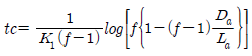
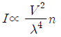
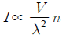
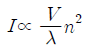
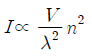
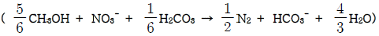
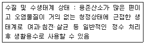

수질환경기사 (2009-03-01 기출문제)
1과목: 수질오염개론
1. glycine(CH2(NH2)COOH) 2mol 을 분해하는데 필요한 이론적 산소 요구량은? (단, 최종산물은 HNO3, CO2, H2O 이다.)
- 154g O2
- 184g O2
- 224g O2
- 244g O2
(정답률: 54%)

2. 생물에 의한 탈질 반응에 관한 설명으로 틀린 것은?
- 통성혐기성균에 의해 이루어 진다.
- 에너지원은 유기물이다.
- NOx 환원하는데 알칼리도가 소모된다.
- 탈질시 DO농도는 0mg/L에 가깝다.
(정답률: 42%)
3. 일반적으로 처리조 설계에 있어서 수리모형으로 plug flow형과 완전혼합형이 있다. 다음의 혼합 정도를 나타내는 표시항 중 이상적인 plug flow형 일 때 얻어지는 값으로 알맞은 것은?
- 분산수 : 0
- 통계학적 분산 : 1
- Morrill지수 : 1보다 크다.
- 지체시간 : 0
(정답률: 60%)
4. 수자원에 대한 특성 설명 중 옳은 것은?
- 지하수는 지표수에 비하여 자연, 인위적인 국지조건에 따른 영향이 적다.
- 해수는 염분, 온도, pH 등 물리화학적 성상이 불안정하다.
- 하천수는 주변지질의 영향이 적고 유기물을 많이 함유하는 경우가 거의 없다.
- 우수의 주성분은 해수의 주성분과 거의 동일하다.
(정답률: 45%)
5. 다음의 유기물 1mole 이 완전 산화될 때 이론적인 산소요구량 (ThOD)이 가장 큰 것은?
- C6H6
- C6H12O6
- C2H5OH
- CH3COOH
(정답률: 60%)
6. 소수성 콜로이드의 특성으로 틀린 것은?
- 물속에서 에멀션으로 존재함
- 염에 아주 민감함
- 물과 반발하는 성질이 있음
- 소량의 염을 첨가하여도 응결 침전됨
(정답률: 65%)
7. 최종 BOD가 20mg/L, DO가 5mg/L인 하천의 상류지점으로부터 6일 유하 거리의 하류지점에서의 DO 농도(mg/L)는? (단, 온도 변화 없으며 DO 포화농도는 9mg/L이고 탈산소계수는 0.1/day, 재폭기계수는 0.2/day, 상용대수 기준임)
- 약 5.0
- 약 5.5
- 약 6.0
- 약 6.5
(정답률: 36%)
8. 어느 하천의 DO가 8mg/L, BODu는 20mg/L 이었다. 이 때 용존산소곡선(DO Sag Curve)에서의 임계점에 도달하는 시간은? (단, 온도는 20℃, DO 포화농도는 9.2mg/L, K1 = 0.1/day, K2 =0.2/day,

이다. )- 0.62일
- 1.58일
- 2.74일
- 3.26일
(정답률: 62%)
9. 수질예측모형의 공간성에 따른 분류에 관한 설명으로 틀린 것은?
- 3차원 모형 : 대호수의 순환 패턴분석에 이용된다.
- 2차원 모형 : 수질의 변동이 일방향성이 아닌 이방향성으로 분포하는 것으로 가정한다.
- 1차원 모형 : 하천이나 호수를 종방향 또는 횡방향의 압출유형(plug flow)반응조로 가정한다.
- 0차원 모형 : 식물성 플랑크톤의 계절적 변동사항에는 적용하기 곤란하다.
(정답률: 10%)
10. 수질오염물질별 인체영향(질환)을 틀리게 짝지어진 것은?
- 비소 : 법랑 반점
- 망간 : 파킨슨씨 증후군과 유사증상
- PCB : 카네미유증
- 수은 : 미나마타병
(정답률: 74%)
11. 최종 BOD농도가 500mg/L인 글루코스(C6H12O6)용액을 호기성 처리할 때 필요한 이론적 인(P)의 농도(mg/L)는? (단, BOD5 : N : P = 100 : 5 : 1, 탈산소계수(k = 0.01hr-1), 상용대수 기준)
- 약 3.8mg/L
- 약 4.7mg/L
- 약 5.3mg/L
- 약 6.2mg/L
(정답률: 24%)
12. Ca(OH)2 150mg/L 용액의 pH는? (단, Ca(OH)2 는 완전 해리하는 것으로 한다. Ca(OH)2의 분자량은 74 )
- 약 9.2
- 약 9.6
- 약 10.3
- 약 11.6
(정답률: 53%)
13. 아세트산(CH3COOH) 3000mg/L 용액의 pH가 3.0 이었다면 이 용액의 해리정수(Ka)는?
- 2 × 10-5
- 3 × 10-5
- 4 × 10-5
- 5 × 10-5
(정답률: 53%)
14. 어느 물질의 반응시작 때의 농도가 200mg/L 이고 1시간 후의 반응물질 농도가 83.6mg/L로 되었다. 반응시작 2시간 후 반응물질 농도는? (단, 1차 반응 기준)
- 35mg/L
- 40mg/L
- 45mg/L
- 50mg/L
(정답률: 43%)
15. 어떤 시료에 메탄올(CH3OH) 250mg/L가 함유되어 있다. 이 시료의 ThOD 및 BOD5의 값은? (단, 메탄올의 BODu = ThOD 이며 탈산소계수는 0.1/day 이고 base는 10이다.)
- ThOD 375mg/L, BOD5 232mg/L
- ThOD 375mg/L, BOD5 256mg/L
- ThOD 475mg/L, BOD5 332mg/L
- ThOD 475mg/L, BOD5 356mg/L
(정답률: 38%)
16. 프로피온산(C2H5COOH) 0.1M 용액이 3% 이온화 된다면 이온화 정수는?
- 6.1 × 10-4
- 7.6 × 10-4
- 8.3 × 10-5
- 9.3 × 10-5
(정답률: 37%)
17. 다음의 등온흡착식 중 (1) 한정된 표면만이 흡착에 이용되고 (2)표면에 흡착된 용질물질은 그 두께가 분자 한 개 정도의 두께이며 (3)흡착은 가역적이고 평형조건에 이루어진다는 가정하에 유도된 식은?
- Freudlich 등온흡착식
- Langmuir 등온흡착식
- BET 등온흡착식
- BCT 등온흡착식
(정답률: 48%)
18. 물의 물리적 특성으로 틀린 것은?
- 고체상태인 경우 수소결합에 의해 육각형 결정구조를 형성한다.
- 액체상태의 경우 공유결합과 수소결합의 구조로 H+, OH-로 전리 되어 전하적으로 양성을 가진다.
- 동점성계수는 점성계수/밀도이며 포아즈(poise)단위를 적용한다.
- 물은 물분자 사이의 수소결합으로 인하여 큰 표면장력을 갖는다.
(정답률: 50%)
19. 어느 배양기(培養基)의 제한기질농도(S)가 100mg/L, 세포최대비 증식계수(Umax)가 0.23/hr 일 때 Monod식에 의한 세포의 비증식계수(U)는? (단, 제한기질 반포화농도(Ks)는 30mg/L 이다.)
- 0.12/hr
- 0.18/hr
- 0.23/hr
- 0.29/hr
(정답률: 67%)
20. 10% NaOH 용액은 몇 N 용액 인가?
- 2.5N
- 3.5N
- 4.5N
- 5.5N
(정답률: 62%)
2과목: 상하수도계획
21. 계획취수량을 확보하기 위하여 필요한 저수용량의 결정에 사용하는 계획기준년에 관한 내용으로 가장 적절한 것은?
- 원칙적으로 20개년에 제1위 정도의 갈수를 표준으로 한다.
- 원칙적으로 15개년에 제1위 정도의 갈수를 표준으로 한다.
- 원칙적으로 10개년에 제1위 정도의 갈수를 표준으로 한다.
- 원칙적으로 7개년에 제1위 정도의 갈수를 표준으로 한다.
(정답률: 57%)
22. 우수배제계획 수립에 적용되는 계획 우수량 산정시 고려하는 확률년수는 원칙적으로 얼마인가?
- 5~10년
- 10~15년
- 15~20년
- 20~25년
(정답률: 0%)
23. 해수담수화 방식 중 상(相)변화방식인 증발법에 해당하지 않는 것은?
- 다단플래쉬법
- 다중효용법
- 가스수화물법
- 증기압축법
(정답률: 39%)
24. 하수처리를 위한 '산화구법'에 관한 설명으로 틀린 것은?
- 용량은 HRT가 24~48시간이 되도록 정한다.
- 형상은 장원형무한수로로 하며 수심은 1.0~3.0m, 수로 폭은 2.0~6.0m 정도가 되도록 한다.
- 저부하조건의 운전으로 SRT가 길어 질산화반응이 진행되기 때문에 무산소 조건을 적절히 만들면 70% 정도의 질소제거가 가능하다.
- 산화구내의 혼합상태가 균일하여도 구내에서 MLSS, 알칼리도 농도의 구배는 크다.
(정답률: 20%)
25. 하수도 시설인 중력식 침사지에 대한 설명으로 옳지 않은 것은?
- 침사지의 평균유속은 0.3m/초를 표준으로 한다.
- 저부경사는 보통 1/500~1/1000 로 하며 그리트 제거설비의 종류별 특성에 따라 범위가 적용된다.
- 침사지의 표면부하율은 오수침사지의 경우 1800m3/m2·day, 우수 침사지의 경우 3600m3/m2·day 정도로 한다.
- 침사지 수심은 유효수심에 모래 퇴적부의 깊이를 더한 것으로 한다.
(정답률: 22%)
26. 막여과법을 정수처리에 적용하는 주된 선정 이유로 틀린 것은?
- 막의 특성에 따라 원수 중의 현탁물질, 콜로이드, 세균류, 크립토스포리디움 등 일정한 크기 이상의 불순물을 제거할 수 있다.
- 막의 교환이나 세척 없이 반영구적 자동운전이 가능하여 유지관리 에너지를 절약할 수 있다.
- 부지면적이 종래보다 적을 뿐 아니라 시설의 건설공사 기간도 짧다.
- 응집제를 사용하지 않거나 또는 적게 사용한다.
(정답률: 57%)
27. 하수 관거의 단면이 직사각형인 경우의 설명으로 틀린 것은?
- 만류가 되기까지는 수리학적으로 유리하다.
- 철근이 해를 받았을 경우라도 상부하중에 대하여 안정하다.
- 시공장소의 흙두께 및 폭원에 제한을 받는 경우에 유리하다.
- 현장 타설일 경우에 공사기간이 지연된다.
(정답률: 48%)
28. 하수처리장의 이차침전지에 관한 설명으로 알맞지 않는 것은?
- 유효수심은 2.5~4m 를 표준으로 한다.
- 침전시간은 계획 1일 최대오수량에 따라 정하며 일반적으로 6~8시간으로 한다.
- 표준활성슬러지법의 경우, 표면부하율은 계획 1일 최대오수량에 대하여 20~30m3/m2·일로 한다.
- 고형물부하율은 40~125kg/m2·일로 한다.
(정답률: 40%)
29. 계획오수량에 관한 설명으로 틀린 것은?
- 합류식에서 우천시 계획오수량은 원칙적으로 계획1일최대오수량의 3배 이상으로 한다.
- 계획1일최대오수량은 1인1일최대오수량에 계획인구를 곱한 후 여기에 공장 폐수량, 지하수량 및 기타 배수량을 더한 것으로 한다.
- 지하수량은 1인1일최대오수량의 10~20%로 한다.
- 계획1일평균오수량은 계획1일최대오수량의 70~80%를 표준으로한다.
(정답률: 47%)
30. 하천수를 수원으로 하는 경우, 취수시설인 취수문에 대한 설명으로 틀린 것은?
- 갈수시, 홍수시, 결빙시에는 취수량 확보 조치 및 조정이 필요하다.
- 토사유입을 방지할 수 있어 강바닥 변동에 따른 영향이 적다.
- 시공조건에서 일반적으로 가물막이를 하고 임시하도 설치 등을 고려해야 한다.
- 기상조건에서 파랑에 대하여 특히 고려 할 필요는 없다.
(정답률: 45%)
31. 도수거에 대한 설명으로 맞는 것은?
- 도수거의 개수로 경사는 일반적으로 1/100~1/300의 범위에서 선정된다.
- 개거나 암거인 경우에는 대개 30~50m 간격으로 시공조인트를 겸한 신축조인트를 설치한다.
- 도수거에서 평균유속의 최대한도는 2.0m/sec로 한다.
- 도수거에서 최소유속은 0.5m/sec로 한다.
(정답률: 40%)
32. 막여과시설에서 막모듈의 '열화'에 대한 내용과 가장 거리가 먼 것은?
- 미생물과 막 재질의 자화 또는 분비물의 작용에 의한 변화
- 산화제에 의하여 막 재질의 특성변화나 분해
- 건조되거나 수축으로 인한 막 구조의 비가역적인 변화
- 응집제 투입에 따른 막모듈의 공급유로가 고형물로 폐색
(정답률: 67%)
33. 펌프의 토출량 1.15m3/sec, 흡입구의 유속 3m/sec 인 경우 펌프의 흡입구경은 몇 mm 인가?
- 600
- 700
- 800
- 900
(정답률: 53%)
34. 정수(淨水)를 위한 급속여과지에 관한 설명으로 틀린 것은?
- 여과면적은 계획정수량을 여과속도로 나누어 구한다.
- 1지의 여과면적은 120m2이하로 한다.
- 모래층의 두께는 여과모래의 유효경 0.45~0.7mm 범위인 경우에는 60~70cm 를 표준으로 한다.
- 여과속도는 120~150m/일 을 표준으로 한다.
(정답률: 48%)
35. 하수도 시설인 우수조정지에 관한 설명으로 틀린 것은?
- 구조형식은 Cell식, Bailing식 및 블록식으로 한다.
- 하류관거 유하능력이 부족한 곳, 하류지역 펌프장 능력이 부족한 곳 등에 설치한다.
- 우수조정지에서 각 시간마다의 유입우수량은 장시간 강우자료에 의한 강우강도곡선에서 작성된 연평균 강우량도를 기초로 하여 산정한다.
- 우수조정지로부터의 우수방류방식은 인공조작에 의하지 않는 자연유하가 바람직하다.
(정답률: 18%)
36. 표준활성슬러지법에 관한 설명으로 틀린 것은?
- MLSS 농도는 1500~2500mg/L를 표준으로 한다.
- HRT는 6~8시간을 표준으로 한다.
- 포기조의 유효수심은 표준식은 3.0~4.0m, 심층식은 6~10m를 표준으로 한다.
- 여유고는 표준식은 80cm 정도를, 심층식은 100cm 정도를 표준으로 한다.
(정답률: 39%)
37. 상수시설인 완속여과지에 관한 설명으로 틀린 것은?
- 여과지 깊이는 하부집수장치의 높이에 자갈층 두께, 모래층 두께, 모래면 위의 수심과 여유고를 더하여 2.5~3.5m를 표준으로 한다.
- 완속여과지의 여과속도는 4~5m/day를 표준으로 한다.
- 모래층의 두께는 70~90cm를 표준으로 한다.
- 여과지의 모래면 위의 수심은 60~90cm를 표준으로 한다.
(정답률: 30%)
38. 수도관에 사용하는 덕타일 주철관의 장점이라 볼 수 없는 것은?
- 시공성이 좋다.
- 이음에 신축 휨성이 있고 지반의 변동에 유연하다.
- 이음종류에 따른 이형관 보호공이 필요 없다.
- 이음의 종류가 풍부하다.
(정답률: 18%)
39. UV를 적용한 하수 살균 소독의 장점으로 틀린 것은?
- 물의 탁도가 소독능력에 영향을 미치지 않는다.
- 화학적 부작용이 적어 안전하다.
- 과학적으로 정명된 정밀한 처리시스템이다.
- 유량과 수질의 변동에 대해 적응력이 강하다.
(정답률: 56%)
40. 강우강도 I=3970/(t+31mm/hr, 유역면적 3.0km2, 유입시간 180sec, 관거길이 1km, 유출계수 1.1, 하수관의 유속 33m/min일 경우 우수유출량은? (단, 합리식 적용)
- 약 29m3/sec
- 약 33m3/sec
- 약 48m3/sec
- 약 57m3/sec
(정답률: 34%)
3과목: 수질오염방지기술
41. 고도 정수처리 대상 항목과 처리방법이 잘못 짝지어진 것은?
- 색도가 높은 경우에는 응집침전처리, 활성탄 처리 또는 오존처리를 한다.
- 트리클로로에틸렌, 테트라클로로에틸렌, 1,1,1-트리클로로에탄 등을 함유한 경우에는 이를 저감시키기 위하여 폭기처리나 입상활성탄처리를 한다.
- 음이온 계면활성제를 다량으로 함유한 경우에는 음이온계면활성제를 제거하기 위하여 활성탄 처리나 생물처리를 한다.
- 침식성유리탄산을 다량 포함한 경우에는 응집침전처리 또는 생물 처리를 한다.
(정답률: 44%)
42. 입자상 매체 여과를 이용하여 살수여상 공정으로부터 유출되는 유출수의 부유물질을 제거하고자 한다. 유출수의 평균유량은 50000m3/day, 여과속도는 120L/min-m2이고, 2개의 여과지를 설계하고자 할 때 여과지 하나의 면적은? (단, 완속여과, 병렬로 여과지 설치 기준)
- 125m2
- 145m2
- 165m2
- 185m2
(정답률: 47%)
43. 인구가 10000명인 마을의 폐수를 활성슬러지법으로 처리하는 처리장에 저율 혐기성 소화조를 설계하려고 한다. 생슬러지(건조고형물 기준) 발생량은 0.11kg/인-일 이며 휘발성고형물은 건조고형물의 70% 이다. 가스발생량은 0.94m3/소화된고형물-kg 이고 휘발성 고형물의 65%가 소화된다면 일일 가스발생량은?
- 약 345m3/day
- 약 471m3/day
- 약 563m3/day
- 약 644m3/day
(정답률: 59%)
44. BOD 400mg/L, 유량 25m3/hr인 폐수를 활성슬러지법으로 처리하고자 한다. BOD 용적부하를 0.3kg BOD/m3·day로 유지하려면 포기조의 수리학적 체류시간은?
- 8시간
- 16시간
- 24시간
- 32시간
(정답률: 28%)
45. 다음 중 부유입자에 의한 백색광 산란을 설명하는 Raleigh 의 법칙을 가장 알맞게 나타낸 공식은? (단, I : 산란광의 세기, V : 입자의 체적, λ : 빛의 파장, n : 입자의 수)




(정답률: 36%)
46. 포기조의 유입수 BOD = 150mg/L, 유출수 BOD = 10mg/L, MLSS = 3000mg/L, 미생물 성장계수(y) = 0.7kgMLSS/kgBOD, 내생호흡계수(kd) = 0.⑤day-1, 포기시간(t) = 6시간 이다. 미생물 체류시간(θc)은?
- 9.4 day
- 10.4 day
- 11.4 day
- 12.4 day
(정답률: 31%)
47. 혐기성 소화조 운전 중 맥주모양의 이상발포가 발생되었을 때의 대책으로 가장 거리가 먼 내용은?
- 슬러지의 유입을 줄이고 배출을 일시 중지한다.
- 조내 교반을 중지한다.
- 소화온도를 높인다.
- 토사의 퇴적은 준설한다.
(정답률: 50%)
48. 고도 수처리를 하기 위한 방법인 '정밀여과'에 관한 설명으로 틀린 것은?
- 막은 대칭형 다공성막 형태이다.
- 분리형태는 Pore size 및 흡착현상에 기인한 체걸름이다.
- 구동력은 농도차에 의한 확산력이다.
- 전자공업의 초순수제조, 무균수제조, 식품의 무균여과에 적용한다.
(정답률: 50%)
49. 직경이 다른 두 개의 원형입자를 동시에 20℃의 물에 떨어뜨려 침강실험을 했다. 입자 A의 직경은 2×10-2cm 이며 입자 B의 직경은 5×10-2cm라면 입자 A와 입자 B의 침강속도의 비율(VA/VB)은? (단, 입자 A와 B의 비중은 같으며, stokes 공식을 적용, 기타 조건은 같음)
- 0.16
- 0.23
- 0.32
- 0.41
(정답률: 42%)
50. 폐수의 양이 200m3/day, SS는 500mg/L이다. 여기에 응집제 150mg/L를 주입한 결과 방류수의 SS가 50mg/L로 되었다. 발생 슬러지의 건량 및 습량은? (단, 함수율은 98%, 건조슬러지의 비중을 1.0로 가정)
- 0.12m3 및 6.0m3
- 0.12m3 및 9.0m3
- 0.16m3 및 8.0m3
- 0.16m3 및 10.0m3
(정답률: 18%)
51. 다음의 활성슬러지 처리방법별 F/M비(kgBOD/kgSS·day)로 적절하지 않은 것은?
- 표준활성슬러지법 : 0.2~0.4kgBOD/kgSS·day
- 순산소활성슬러지법 : 0.3~0.6kgBOD/kgSS·day
- 장기포기법 : 0.01~0.03kgBOD/kgSS·day
- 산화구법 : 0.03~0.⑤kgBOD/kgSS·day
(정답률: 19%)
52. 아래의 공정은 생물학적 질소, 인 제거의 대표적 공정인 A2/O 공정을 나타낸 것이다. 각 반응조의 기능에 대하여 가장 적절하게 설명한 것은?
- 혐기조 : 인 방출, 무산소조 : 질산화, 폭기조 : 탈질
- 혐기조 : 인 방출, 무산소조 : 탈질, 폭기조 : 인과잉섭취
- 혐기조 : 탈질, 무산소조 : 질산화, 폭기조 : 인방출
- 혐기조 : 탈질, 무산소조 : 인과잉섭취, 폭기조 : 인방출
(정답률: 47%)
53. 유량이 250m3/day이고 TOC 농도가 200mg/L인 페놀폐수를 고정상 탄소흡착 칼럼으로 처리하여 유출수의 TOC 농도를 10mg/L로 유지하려고 한다. 파괴점 도달시간은? (단, 수리학적 용적 부하율은 4m3/m3·hr이고, 탄소밀도는 400kg/m3, TOC 농도를 10mg/L로 유지할 수 있는 탄소 단위 질량당 처리수용적은 500L/kg 임)
- 약 1.2 day
- 약 2.1 day
- 약 3.4 day
- 약 4.2 day
(정답률: 9%)
54. MLSS의 농도가 2000mg/L 인 슬러지를 부상법(Flotation)에 의해 농축시키고자 한다. 압축 탱크의 유효전달 압력이 4기압이며 공기의 밀도를 1.3g/L, 공기의 용해량이 18.7mL/L일 때 Air/Solid(A/S)비는? (단, 유량은 300m3/day이며 처리수의 반송은 없고 f = 0.5 이다. )
- 0.012
- 0.018
- 0.023
- 0.028
(정답률: 34%)
55. 정수처리시 적용되는 랑게리아 지수에 관한 내용으로 틀린 것은?
- 랑게리아 지수란 물의 실제 pH와 이론적 pH(pHs : 수중의 탄산 칼슘이 용해되거나 석출 되지 않는 평형상태로 있을 때의 pH)와의 차이를 말한다.
- 랑게리아 지수가 부(-)의 값으로 절대치가 클수록 탄산칼슘피막 형성이 쉽다.
- 랑게리아 지수가 부(-)의 값으로 절대치가 클수록 물의 부식성이 강하다.
- 물의 부식성이 강한 경우의 랑게리아 지수는 pH, 칼슘경도, 알칼리도를 증가시킴으로써 개선할 수 있다.
(정답률: 54%)
56. 바닥 면적이 1km2 인 호수의 물 깊이는 5m로 측정되었다. 한 달 (30일) 사이 호수물의 인 농도가 200μg/L에서 40μg/L로 감소하고 감소한 인은 모두 침강 된 것으로 추정될 때 인의 침전율 (mg/m2·day)은? (단, 호수의 유입, 유출은 고려하지 않음)
- 26.6
- 34.8
- 48.0
- 52.3
(정답률: 43%)
57. 수질 성분이 부식에 미치는 영향을 잘못 기술한 것은?
- 높은 알칼리도는 구리와 납의 부식을 증가시킨다.
- 암모니아는 착화물 형성을 통해 구리, 납 등의 금속용해도를 증가시킬 수 있다.
- 잔류염소는 Ca와 반응하여 금속의 부식을 감소시킨다.
- 구리는 갈바닉 전지를 이룬 배관상에 흠집(구멍)을 야기한다.
(정답률: 59%)
58. BAC(Biological Activated Carbon : 생물활성탄)의 단점에 관한 설명으로 알맞지 않은 것은?
- 활성탄이 서로 부착, 응집되어 수두손실이 증가 될 수 있다.
- 정상상태까지의 기간이 길다.
- 미생물 부착으로 일반 활성탄보다 사용시간이 짧다.
- 활성탄에 병원균이 자랐을 때 문제가 야기될 수 있다.
(정답률: 53%)
59. 하수처리과정에서 소독 방법 중 염소와 자외선 소독의 장단점을 비교할 때 염소소독의 장단점으로 틀린 것은?
- 암모니아의 첨가에 의해 결합잔류염소가 형성된다.
- 염소접촉조로부터 휘발성유기물이 생성된다.
- 처리수의 총용존고형물이 감소한다.
- 처리수의 잔류독성이 탈염소과정에 의해 제거되어야 한다.
(정답률: 48%)
60. 생물학적으로 질소를 제거하기 위해 질산화-탈질공정을 운영함에 있어, 호기성 상태에서 산화된 NO3- 40mg/L를 탈질 시키는데 소모되는 메탄올의 양은?

- 12.4mg/L
- 17.2mg/L
- 21.1mg/L
- 26.3mg/L
(정답률: 48%)
4과목: 수질오염공정시험기준
61. 이온전극법의 특성에 관한 설명으로 틀린 것은?
- 이온강도 : 분석대상 이온과 반응하지 않고 전극전위에 영향을 일으키지 않는 염류를 이온강도 조절용 완충액으로 첨가하여 시험한다.
- 이온전극 : 일반적으로 내부전극으로서 염화제일수은전극이 주로 사용된다.
- 온도 : 측정용액의 온도가 10℃ 상승하면 전위기울기는 1가 이온이 약 2mV가 변화 한다.
- 교반 : 측정에 방해되지 않는 범위내에서 세게 일정한 속도로 교반하여야 한다.
(정답률: 30%)
62. 유기물 함량이 낮은 깨끗한 하천수나 호소수 등의 시료 전처리방법으로 이용되는 것은?
- 질산에 의한 분해
- 염산에 의한 분해
- 황산에 의한 분해
- 아세트산에 의한 분해
(정답률: 32%)
63. 원자흡광광도법으로 셀레늄을 측정할 때 수소화셀레늄을 발생시키기 위해 염산산성하의 시료에 주입하는 것은?
- 염화제일주석 용액
- 아연분말
- 요오드화나트륨 분말
- 수산화나트륨 용액
(정답률: 25%)
64. 염소이온 측정방법 중 질산은 적정법의 정량범위는 몇 mg/L 이상인가?
- 0.1
- 0.3
- 0.5
- 0.7
(정답률: 50%)
65. 식물성 플랑크톤의 정량시험 중 저배율에 의한 방법은? (단, 200배율 이하)
- 스트립 이용 계수
- 팔머-말로니 챔버 이용 계수
- 혈구계수기 이용 계수
- 최정 확수 이용 계수
(정답률: 48%)
66. 6가 크롬 표준용액(0.5mg/mL) 1L를 조제하기 위하여 소요되는 표준시약(중크롬산칼륨)의 양(g)은? (단, 원자량 : 칼륨=39, 크롬=52)
- 1.413
- 2.826
- 3.218
- 4.641
(정답률: 29%)
67. 시안을 흡광광도법으로 측정할 때 방해물질을 제거하는 방법으로 맞는 것은?
- 다량의 유지류가 함유된 시료 : pH 6~7로 조절하고 노말헥산 또는 클로로포름을 넣어 짧은 시간동안 흔들어 섞고 수층을 분리하여 시료를 취한다.
- 잔류염소가 함유된 시료 : 초산아연 용액을 넣어 제거한다.
- 황화합물이 함유된 시료 : 아비산나트륨 용액을 넣어 제거한다.
- CO2가 함유된 시료 : 메틸 오렌지용액을 넣고 pH를 약 4로 조절하여 탄산으로 발생, 제거한다.
(정답률: 35%)
68. 어느 폐하수의 유량을 측정하려 할 때 조사 당일은 그날의 조업개시 시간부터 원칙적으로 몇 분마다 일정간격으로 폐하수량을 측정하여야 하는가?
- 5분 또는 10분
- 10분 또는 15분
- 15분 또는 20분
- 20분 도는 30분
(정답률: 31%)
69. 염소이온(Cl-)이 5000mg/L 들어 있는 어떤 공장폐수 20mL를 취해 중크롬산칼륨법에 의한 화학적 산소요구량을 측정한다면 황산제이수은 몇 g을 넣는 것이 가장 적절한가?
- 1.0g
- 1.3g
- 1.6g
- 1.9g
(정답률: 25%)
70. 인산염인 시험법 중 생성된 몰리브덴 청의 흡광도를 690nm에서 측정하여 정량하는 방법은?
- 아스코르빈산 환원법
- 카드뮴 아말감 환원법
- 염화제일주석 환원법
- 환원증류킬달법
(정답률: 16%)
71. 시료를 적절한 방법으로 보존할 때 최대 보존기간이 다른 항목은?
- 시안
- 노말헥산추출물질
- 화학적산소요구량
- 총인
(정답률: 59%)
72. 알킬수은화합물을 가스크로마토그래프법에 따라 정량할 때 사용하는 검출기로 가장 적절한 것은?
- 불꽃광도형 검출기(FPD)
- 전자포획형 검출기(ECD)
- 불꽃열이온화 검출기(FTD)
- 열전도도 검출기(TCD)
(정답률: 60%)
73. 실험 총칙에 대한 설명으로 틀린 것은?
- '방울수'라 함은 0℃에서 정제수 20방울을 적하할 때 그 부피가 약 1mL 되는 것을 뜻한다.
- 찬 곳은 따로 규정이 없는 한 0~15℃의 곳을 뜻한다.
- '진공'이라 함은 따로 규정이 없는 한 15mmHg 이하를 말한다.
- '약'이라 함은 기재된 양에 대하여 ±10% 이상의 차가 있어서는 안된다.
(정답률: 42%)
74. 어느 공장의 폐수 100mL를 취하여 산성 100℃에서 KMnO4에 의한 화학적 산소 소비량을 측정하였다. 시료의 적정에 소비된 0.025N KMnO4의 양이 7.5mL였다면 이 폐수의 COD는 약 몇 mg/L 인가? (단, 0.025N KMnO4의 factor는 1.02이며, 바탕시험 적정에 소비된 0.025N KMnO4는 1.00mL 였다.)
- 13.3
- 16.7
- 24.8
- 32.2
(정답률: 27%)
75. 수은의 분석시 환원 기화법에 사용하는 환원기화장치의 환원용기에 주입하는 용액은?
- 염화제일주석용액
- 염화제일철용액
- 황산제일철용액
- 염산 히드록실아민 용액
(정답률: 28%)
76. 다음 중 식물성 플랑크톤(조류) 시험 방법에 대한 설명으로 틀린것은?
- 즉시 시험하는 것이 어려울 경우 아세톤 3~5V/V%를 가하여 보존한다.
- 침강성이 좋지 않은 남조류 등은 루골용액 1~2V/V%를 가하여 보존한다.
- 시료의 개체수는 계수면적당 10~40 정도가 되도록 조정한다.
- 시료가 육안상 녹색인 경우 증류수를 이용하여 적절한 농도로 희석한다.
(정답률: 48%)
77. 흡광 광도법에 의한 페놀류 시험방법에 대한 설명 중 틀린 것은?
- 정량범위는 추출법일 때 0.0025~0.⑤mg, 직접법일 때 0.⑤~0.5mg 이다.
- 완충액을 시료에 가하여 pH 10으로 조절한다.
- 적색의 안티피린계 색소의 흡광도를 측정한다.
- 흡광광도계의 파장은 수용액에서 460nm, 클로로포름 용액에서는 510nm이다.
(정답률: 35%)
78. 디에틸디티오카르바민산법을 적용한 구리 측정에 관한 설명으로 틀린 것은?
- 시료의 전처리를 하지 않고 직접 시료를 사용하는 경우, 시료 중에 시안화합물이 함유되어 있으면 염산산성으로 하여서 끓여 시안 화물을 완전히 분해 제거한 다음 시험한다.
- 비스머스(Bi)가 구리의 양보다 2배 이상 존재할 경우에는 청색을 나타내어 방해한다.
- 무수황산나트륨 대신 건조거름종이를 사용하여 여과하여도 된다.
- 추출용매는 초산부틸 대신 사염화탄소, 클로로포름, 벤젠 등을 사용할 수 있다.
(정답률: 36%)
79. 유도결합플라스마 발광광도법에 대한 설명으로 틀린 것은?
- 플라스마는 그 자체가 광원으로 이용되기 때문에 매우 넓은 농도 범위에서 시료를 측정한다.
- ICP의 토치는 제일 안쪽으로는 시료가 운반가스와 함께 흐르며, 가운데 관으로는 보조가스, 제일 바깥쪽 관에는 냉각가스가 도입된다.
- 알곤플라스마는 토치 위에 불꽃형태로 생성되지만 온도, 전자 밀도가 가장 높은 영역은 중심축보다 약간 안쪽에 위치한다.
- ICP 발광광도 분석장치는 시료주입부, 고주파 전원부, 광원부, 분광부, 연산처리부 및 기록부로 구성되어 있다.
(정답률: 25%)
80. 음이온 게면활성제(NaO3SO(CH2)11CH3)를 흡광광도법(메틸렌 블루우법)으로 측정 할 때의 파장과 정량범위는?
- 510nm, 정량범위는 0.002~0.⑤ mg
- 530nm, 정량범위는 0.002~0.1mg
- 650nm, 정량범위는 0.002~0.⑤mg
- 680nm, 정량범위는 0.002~0.1mg
(정답률: 39%)
5과목: 수질환경관계법규
81. 수질오염방지시설 중 생물화학적 처리시설에 해당되는 것은?
- 살균시설
- 폭기시설
- 환원시설
- 침전물 개량시설
(정답률: 15%)
82. 비점오염원의 변경신고 기준으로 맞는 것은?
- 총 사업면적, 개발면적 또는 사업장 부지면적이 처음 신고면적의 100분의 15 이상 증가하는 경우
- 총 사업면적, 개발면적 또는 사업장 부지면적이 처음 신고면적의 100분의 20 이상 증가하는 경우
- 총 사업면적, 개발면적 또는 사업장 부지면적이 처음 신고면적의 100분의 30 이상 증가하는 경우
- 총 사업면적, 개발면적 또는 사업장 부지면적이 처음 신고면적의 100분의 50 이상 증가하는 경우
(정답률: 28%)
83. 폐수배출시설에 대한 배출부과금을 부과하는 경우, 배출부과금 부과기준일 전 6개월 이상 방류수 수질 기준을 초과하여 오염물질을 배출하지 아니한 사업자에 대한 기본배출부과금 감경율로 맞는 것은? (단, 최근 1년 이상 2년내에 방류수 수질기준을 초과하여 오염물질을 배출하지 아니한 경우 기준)
- 100분의 20
- 100분의 30
- 100분의 40
- 100분의 50
(정답률: 34%)
84. 환경기술인을 임명하지 아니하거나 임명(바꾸어 임명한 것을 포함한다)에 대한 신고를 하지 아니한 자에 대한 과태료 처분 기준으로 맞는 것은?
- 200만원 이하 과태료
- 300만원 이하 과태료
- 500만원 이하 과태료
- 1000만원 이하 과태료
(정답률: 29%)
85. 폐수종말처리시설의 방류수 수질기준 중 화학적 산소요구량(mg/L)은 얼마 이하로 배출하여야 하는가?
- 20
- 30
- 40
- 50
(정답률: 15%)
86. 1일 폐수배출량 1200m3 , 청정지역인 사업장에서 BOD(mg/L) -COD(mg/L) - SS(mg/L)의 배출허용기준 조합은?
- 20이하 - 30이하 - 20이하
- 20이하 - 40이하 - 20이하
- 30이하 - 40이하 - 30이하
- 40이하 - 50이하 - 40이하
(정답률: 24%)
87. 기타 수질오염원의 대상과 규모 기준으로 틀린 것은?
- 자동차 폐차장 시설로서 면적 1500m2이상인 시설
- 조류의 알을 물세척만 하는 시설로서 물 사용량이 1일 5m3이상인 시설
- 농산물을 보관·수송 등을 위하여 소금으로 절임만 하는 시설로서 용량 10m3이상인 시설
- 「내수면 어업법」에 따른 가두리양식어장으로서 수조면적 합계 500m2 이상인 시설
(정답률: 15%)
88. 비점오염저감계획서에 포함되어야 하는 사항과 가장 거리가 먼 내용은?
- 비점오염원 저감방안
- 비점오염원 관련 현황
- 비점오염저감시설 설치계획
- 비점오염원 관리 및 모니터링 방안
(정답률: 24%)
89. '수질 및 수생태계 정책심의 위원회'에 관한 설명으로 틀린 것은?
- 수계, 호소 등의 관리 우선순위 및 관리대책에 관한 사항을 심의 한다.
- 수질 및 수생태계와 관련된 측정, 조사에 관한 사항을 심의 한다.
- 위원회의 위원장은 환경부장관으로 한다.
- 위원회는 위원장과 부위원장을 포함하여 15인 이내로 한다.
(정답률: 22%)
90. 비점오염저감시설의 설치기준에서 '장치형 시설'에 해당되지 않는 것은?
- 와류형 시설
- 여과형 시설
- 침투형 시설
- 생물학적 처리형 시설
(정답률: 45%)
91. 폐수처리방법이 화학적 처리방법인 경우에 시운전 기간 기준은? (단, 가동개시일은 1월 1일임)
- 가동개시일부터 30일
- 가동개시일부터 40일
- 가동개시일부터 50일
- 가동개시일부터 60일
(정답률: 37%)
92. 기본배출부과금 산정시 적용되는 지역별 부과계수로 맞는 것은?
- 가 지역 : 1.2
- 청정지역 : 0.5
- 나 지역 : 1.0
- 특례지역 : 2.0
(정답률: 19%)
93. 위임업무 보고사항 중 보고횟수가 다른 업무 내용은?
- 기타 수질오염원 현황
- 폐수처리업에 대한 등록, 지도단속실적 및 처리실적 현황
- 폐수 위탁사업장 내 처리현황 및 처리실적
- 과징금 부과 실적
(정답률: 30%)
94. 환경기술인 등의 교육기관을 맞게 짝지은 것은?
- 국립환경과학원-환경보전협회
- 국립환경과학원-환경관리공단
- 국립환경인력개발원-환경보전협회
- 국립환경인력개발원-환경관리공단
(정답률: 34%)
95. 수질오염감시경보 중 '관심'단계에서의 조치사항이 아닌 것은?
- 측정기기의 이상 여부 확인
- 정수처리 기술지원
- 수면관리자에게 원인 조사 요청
- 원인 조사 및 주변 오염원 단속 강화
(정답률: 39%)
96. 법령상 용어의 정의로 맞는 것은?
- 폐수라 함은 액체성 또는 고체성의 수질오염물질이 혼입된 물로 환경부령이 정하는 것을 말한다.
- 수질오염물질은 수질오염의 요인이 되는 물질로서 대통령령으로 정하는 것을 말한다.
- 폐수무방류배출시설이라 함은 폐수배출시설에서 발생하는 폐수를 사업장 내에서 처리 또는 위탁하여 공공수역으로 배출하지 아니하는 시설을 말한다.
- 기타 수질 오염원이라 함은 점오염원 및 비점오염원으로 관리되지 아니하는 수질오염물질을 배출하는 시설 또는 장소로서 환경부령이 정하는 것을 말한다.
(정답률: 19%)
97. 환경기준에서 해역의 생활환경기준으로 틀린 것은? (단, 등급은 I기준)
- 용매추출유분 : 0.1mg/L 이하
- 총질소 : 0.3mg/L 이하
- 총인 : 0.03mg/L 이하
- 화학적산소요구량 : 1mg/L 이하
(정답률: 7%)
98. 다음은 하천의 등급별 수질 및 수생태계의 상태에 대한 설명이다. 해당 되는 등급은?

- 매우 좋음
- 약간 좋음
- 좋음
- 보통
(정답률: 23%)
99. '2종사업장'의 규모에 해당 되는 경우는?
- 1일 폐수배출량 900m3
- 1일 폐수배출량 600m3
- 1일 폐수배출량 400m3
- 1일 폐수배출량 300m3
(정답률: 50%)
100. 초과배출부과금 부과 대상 수질오염물질의 종류가 아닌 것은?
- 부유물질
- 사염화탄소
- 테트라클로로에틸렌
- 아연 및 그 화합물
(정답률: 20%)
CH2(NH2)COOH → CO2 + H2O + NH3
이때, NH3은 더 이상 분해되지 않으므로 최종산물은 HNO3, CO2, H2O가 된다.
분해식을 보면 CO2 1몰을 만들기 위해서는 1몰의 글리신이 필요하다. 따라서 CO2 2몰을 만들기 위해서는 글리신 2몰이 필요하다.
H2O 1몰을 만들기 위해서는 글리신 1몰이 필요하다.
HNO3 1몰을 만들기 위해서는 NH3 1몰과 O2 0.5몰이 필요하다. (NH3 + O2 → HNO3 + H2O)
따라서, 글리신 2몰을 분해하기 위해서는 O2 1몰이 필요하다.
O2 1몰의 질량은 32g이므로, 글리신 2몰을 분해하기 위해서는 64g의 O2가 필요하다.
따라서, 이론적 산소 요구량은 224g O2이다.